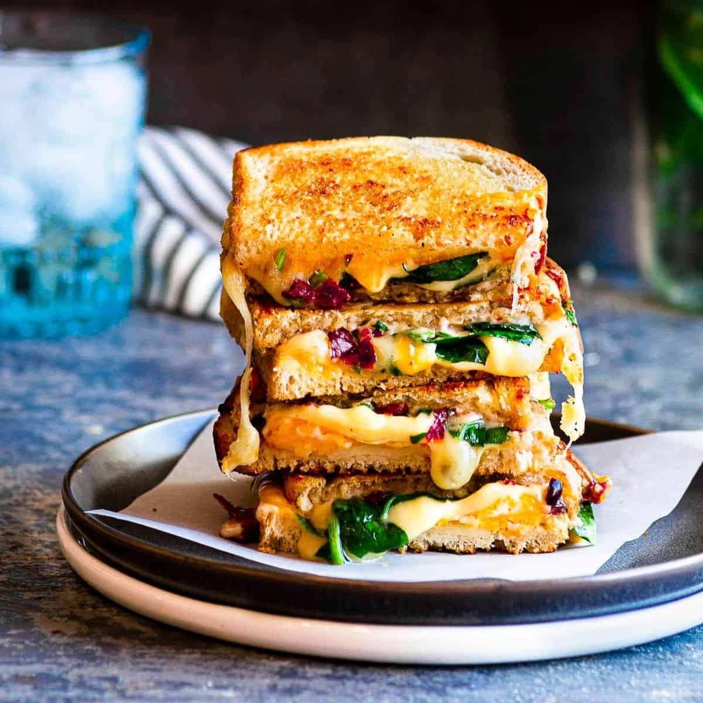

Grilled Cheese Sandwich

Description
Classic comfort food that can be customized with your choice of bread and cheese, and you can get creative by adding your favorite ingredients for extra flavor.
Ingredients:
- 2 slices of bread (your choice of bread, such as white, wheat, or sourdough)
- Butter or margarine
- Sliced cheese (e.g., cheddar, American, Swiss)
- Optional additions like sliced tomatoes, ham, or bacon
Steps:
- Preheat a Skillet or Pan: Place a non-stick skillet or frying pan over medium-low heat. You want it to be hot enough to melt the cheese and toast the bread without burning it.
- Butter the Bread: Take one slice of bread and spread butter or margarine on one side. This will be the outside of the sandwich that gets toasted.
- Add Cheese: Place the buttered side of the bread slice down in the skillet. Quickly add the sliced cheese on top of the bread. If you're adding any optional ingredients like tomatoes, ham, or bacon, you can place them on top of the cheese.
- Top with the Second Slice: Place the second slice of bread on top of the cheese and optional ingredients, with the buttered side facing up. This will become the outside of the sandwich.
- Toast and Flip: Allow the sandwich to cook for 2-4 minutes on one side or until it turns golden brown and crispy. Carefully flip the sandwich with a spatula and cook the other side for another 2-4 minutes until it's equally toasted and the cheese inside is melted.
- Remove from Heat: Once both sides are toasted to your liking and the cheese is melted, remove the grilled cheese sandwich from the skillet.
- Slice and Serve: Let the sandwich cool for a minute or two to avoid burning your mouth. Then, use a knife to slice it in half diagonally, creating two triangular halves. Serve immediately while it's warm and the cheese is gooey.